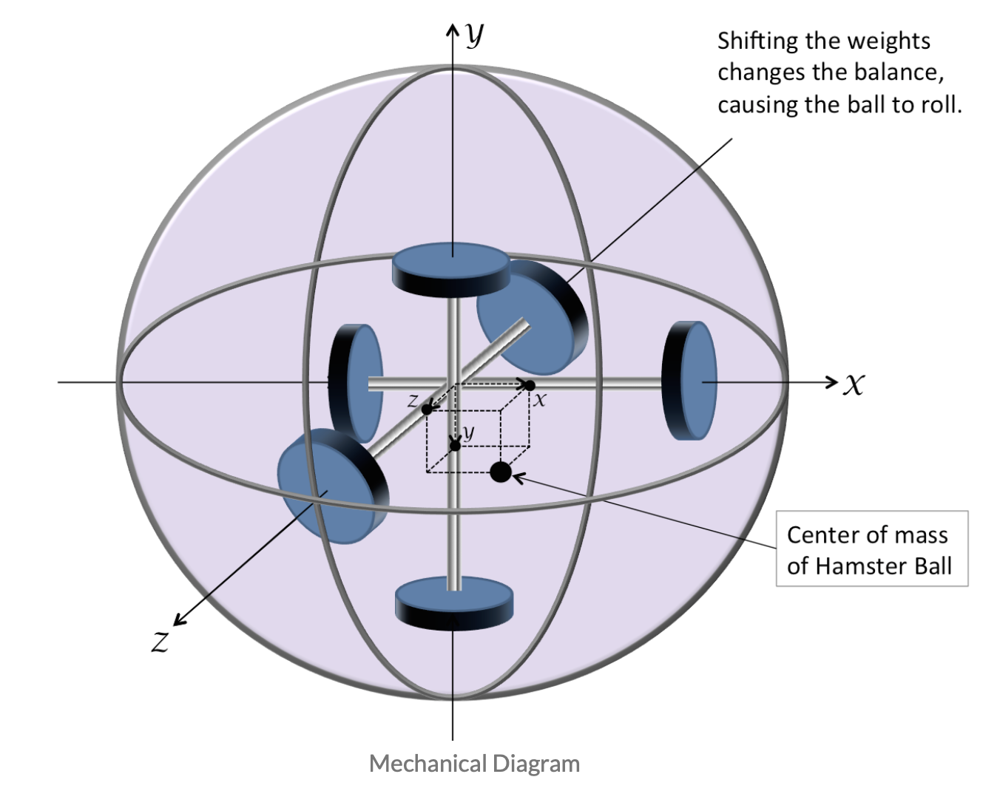
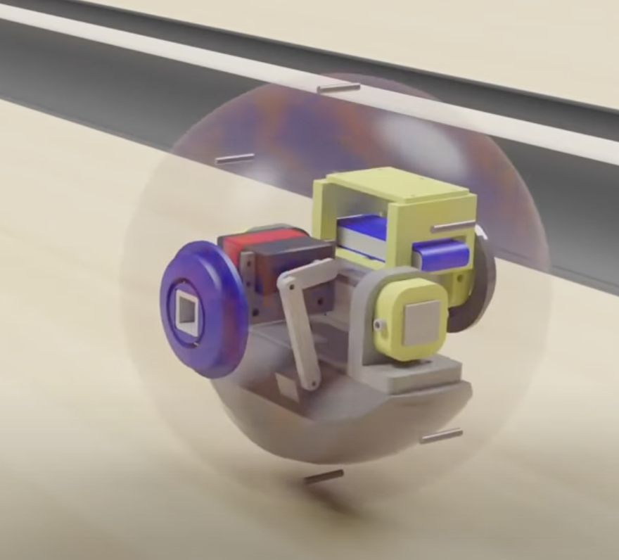

This is the OUTDATED drawing of a mult-wheel robot with an omniwheel acting as the "paintbrush". I've rethought this for a sleeker body and some more challenge for me (oops!)!!
Inducing hamster ball motion: how do I find the spirit within a big empty ball to move it forward without addding any excess wheels and protruding elements from the body? There is one big answer: shifting the center of gravity by controlling the position of various weights withn the sphere.
My project sits in between two existing center of gravity designs, one by Casey Duckering and the other by Mark Rober. They are presented below. Casey's has all three axes in a normal sized hamster ball, and Mark's has only one in a bowling-ball case. The weight both simulates the heft of a normal bowling-ball and also is enough to disrupt the velocity of a typical throw.
 I will be working on two axes, as it is a free-draw, free-print robot and therefore constrained to two axes. Inspired by Mark's swinging arc, I will add another in the 90 degree direction.
When discussing with Nathan, we realized that the easiest way to sense direction in a small body (thinking of a hamster sphere!) is to have a single microphone sense if one area is louder than the other. Hence, the control flow would look a little like this: the mic would sample every 2 seconds while the robot is running in one direction. If the final area is louder than the other, the direction was correct; if not, it would circle back. Since the robot's greatest intended output is its ink footprint, I'll refine this process so the route looks nice on paper :). For our purposes here, we can abstract this mission like so:
Configure and code a microphone so it samples sound every 3 seconds. If the latter sampling is LOUDER than the earlier, than the LED will be ON. If not, it will turn OFF. This is an example of the decision making that the robot will make.
To choose my materials: It will be a
Here is my code:
Here is my circuit:
Here is a quick video of it blinking:
references